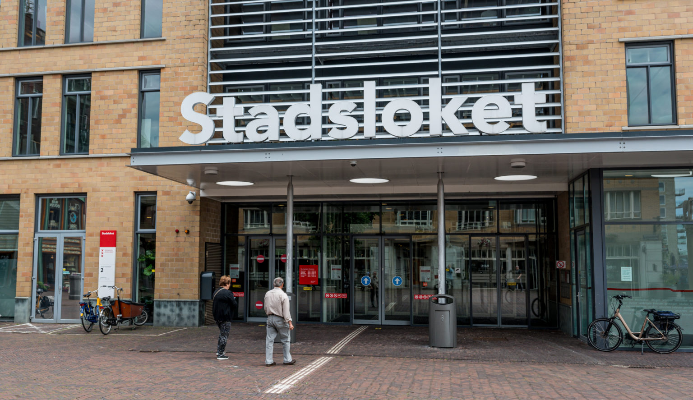

Overzicht
Op de overzichtspagina vind je een lijst van verschillende algoritmes, deze kun je filteren op thema.
Op de overzichtspagina vind je een lijst van verschillende algoritmes, deze kun je filteren op thema.

| NAAM | ORGANISATIE | DATUM | STATUS | TYPE | |
|---|---|---|---|---|---|
 |
Handhavind Illegale Vakantieverhuur | Gemeente Amsterdam | 01 - 12 - 2021 | Test | ? |
 |
Top 400/600 | Gemeente Amsterdam | 03 - 03 - 2022 | Actief | ? |
|  | Vroeg Eropaf | Gemeente Amsterdam | 03 - 03 - 2022 | Actief | ? |
|
Zonnepanelen Den Haag | Gemeente Den Haag | 03 - 03 - 2022 | Actief | ? |
| Slimme brugopeningen | Provincie Zuid-Holland | 30 - 07 - 2021 | Bij drie bruggen in gebruik | Long Short-Term Memory neutrale netwerken | |
|
Vorderingen/straf maatregelen | Overheid | 02 - 10 - 2021 | In onderzoek | ? |
| Meldingen openbare ruimte | Gemeente Amsterdam | 03 - 03 - 2022 | Actief | Actief |